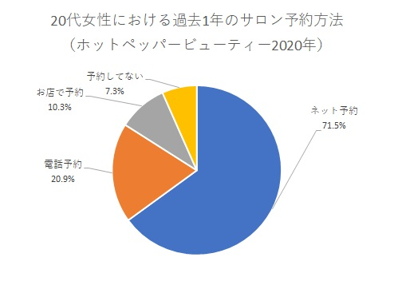
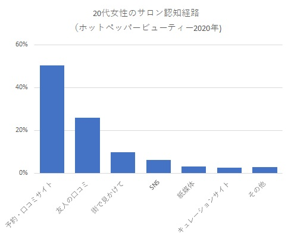
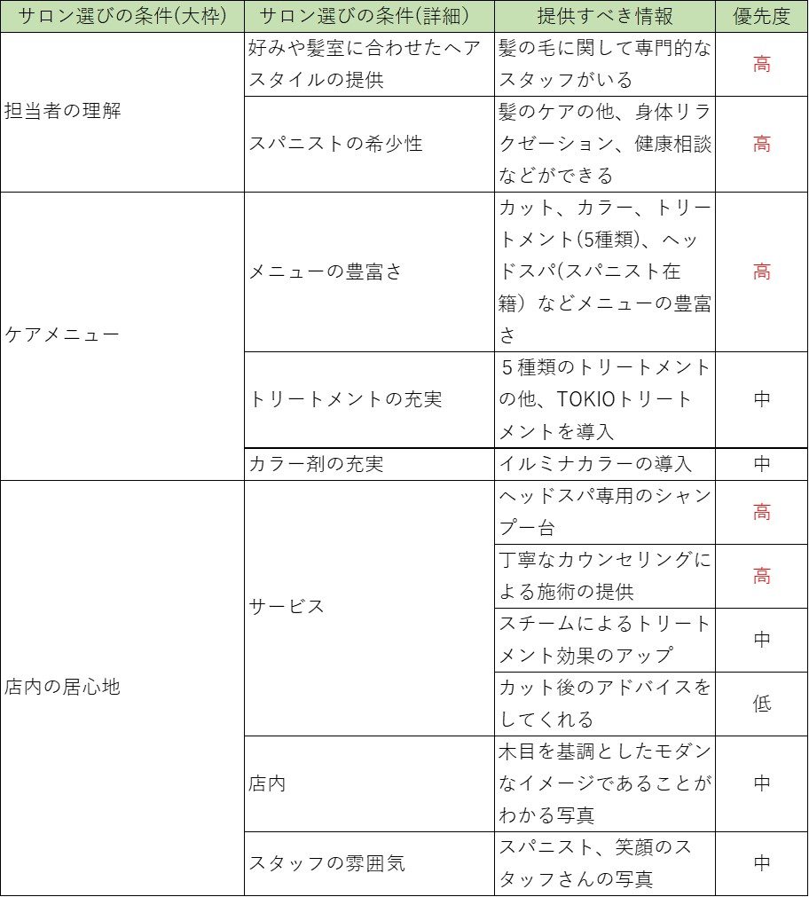

ヘアサロンの仮想サイト
概要
所沢で実在する人気サロン店を元に仮想サイトを作成しました。美容院は競合店が多く、差別化もつけにくい為、マーケティングの観点から ターゲットに合わせた訴求とペルソナの策定に重きを置きました。
なお、お店は実在しますが、画像はすべてフリー素材です。
ペルソナ
佐藤愛さん(27)
・女性 会社員
・自分の意志ははっきり伝える性格
・勤務地は東京
・実家(埼玉県中部）から埼玉県所沢市に引っ越してきた(一人暮らし）
・引っ越してきたばかりで通える美容室を探し中
・自宅は駅から徒歩約15分
・最近責任ある仕事を担当。その為、夜遅くまで仕事をしており時間が取れない(20:00～21:00はザラ）
・美容室に通う頻度は多い（年6回以上）
・夜遅くまで営業しているお店が良い（～22:00くらいまで）
・1回の利用で「カット」「カラー」「トリートメント」を利用
・多少の金額を出す事に抵抗はない（1万円以上）
・お店選びの条件
①店内の居心地が良い
②店員が自分の好み・クセを理解してくれる
③店員と話しやすい
④アクセスがし易い（会社帰りに通える）
ペルソナ作成のロジックは下記
ペルソナ作成までの道のりユーザーフロー
ユーザーが予約するまでのフローを下記と仮定する
・どんな時に
行き・帰りの電車内
・どんな状態で
定期的に通いたい美容室をスマートフォンで何となく探す
・導線
①Googleで「所沢 美容室 人気」で検索
②検索上位に表示されたホットペッパービューティーをクリック
③口コミが多く高評価な「ケアケア」をクリック
④ケアケアのWebサイトはないが、お店の評価は高評価であり、
HPBのベストサロン賞を受賞している事、駅から0分を売りにしている事からWeb予約を行う。
また、導線は下記データから求めた


コンテンツアイデア
優先度の高い「専門性を持ったスタッフ」と「特殊なヘッドスパ専用シャンプー」、 優先度は中ではあるが、お店自体がトリートメントとカラーに力を入れている為 「トリートメント」と「イルミナカラーの導入」を特徴に上げる
デザインアイデア
情報設計
・トップにお店の雰囲気を感じられるよう内観写真を入れる
・お店が注力している内容をトップの次に置いた
・スタイルやスタッフなどお店の体験をイメージさせるものは細かい情報より早めに置く
・メニューはHPBよりご覧いただき、そのまま予約してもらえるようHPBのページに飛ぶ
デザイン
・メインカラーはシンプルな白を採用し、アクセントカラーはお店の内観をイメージした茶色を採用
・トップはお店の雰囲気を表せるように画面全体に表示
・FEATUREは、写真で概ね伝わるようにし、文字数を極力減らす
・STYLEはロング・セミロング・ショート等の項目ボタンを設けサムネイルを使用し、自分の好みのヘアを直感的に探しやすくする
・STAFFはスパニストを含めたスタッフさんの写真が強調されるようシンプルなデザイン
・[RESERVATION]及び[メニューを見る]はユーザーに予約してもらう重要なボタンの為アクセントカラーである茶色を用いた